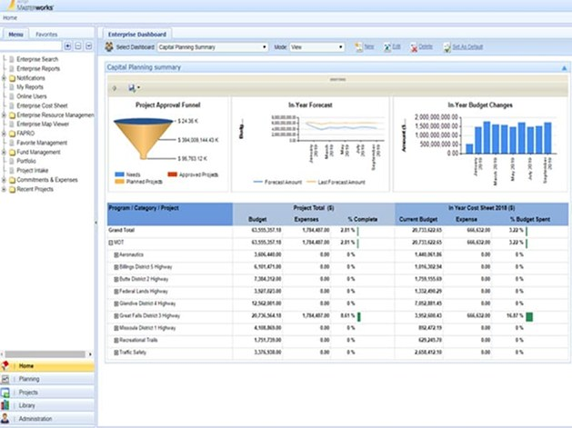
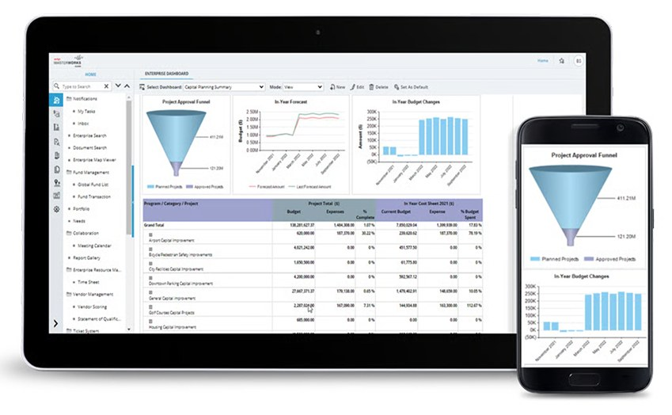

Bringing visual consistency to a capital infrastructure management platform
Masterworks is Aurigo's capital infrastructure management platform, used by public agencies to plan, budget, and manage large-scale projects. When I joined, the product had been built incrementally over time, driven by evolving requirements rather than a single upfront design plan — which left the UI visually inconsistent across the platform.
As the sole designer on this, I worked closely with developers, managers, and the CEO — since this revamp was seen as critical ahead of a pitch to Autodesk. My focus was establishing visual consistency: unifying color and styling across screens that had developed independently over time, without a single upfront design plan.


Old UI (left) — inconsistent styling built up over years of incremental development — vs. new UI (right), unified in color and layout across the platform.
I left Aurigo around the time of the Autodesk pitch, so I don't know the final result with certainty — though I later heard it was approved.